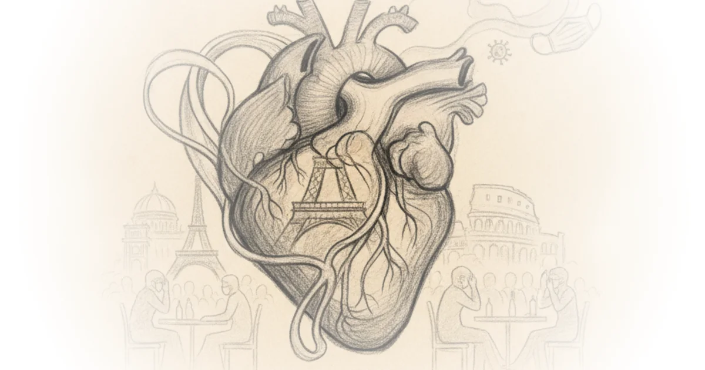

This piece from Natural Selections offers a rare, granular account of how pandemic-era policies felt from within the heart of European bureaucracy, challenging the assumption that expert consensus was always rooted in transparent evidence. It is not merely a memoir of isolation; it is a forensic dissection of how a data analyst in Brussels came to believe that the very system he served had abandoned rationality for performative control.
The Erosion of Trust
The narrative begins with a striking observation about collective memory: "So many people I know have memory-holed the Covid experience." Natural Selections reports that the author, a civil servant in Brussels, initially accepted the official narrative without question, believing that "expert-led bureaucracies... would settle on outcomes that were both just and true." This trust was not blind faith but a professional habit; as someone who had studied the Pentagon Papers and Chomsky's Manufactured Consent, he assumed the system worked for him because it served his interests.

However, the piece argues that this confidence shattered when personal observation clashed with official directives. The author describes the absurdity of daily life under lockdown: "You remember how we all did that?" referring to the ritual of donning a mask just to walk to a restaurant bathroom and removing it immediately upon returning to the table. This detail highlights the performative nature of compliance, where rules seemed designed for optics rather than epidemiological logic.
The author's skepticism deepened as he engaged in his own data analysis. He notes that Ireland's pandemic plan was "crafted with a much more fatal pandemic in mind," yet no lockdown was initially suggested, creating a glaring inconsistency between the threat level and the response. This disconnect led him to question the scientific basis for measures like school closures and mask mandates, which he found were not backed by evidence at the time. The piece suggests that the administration's approach lacked an endgame, leaving citizens in a state of perpetual uncertainty.
"It felt as if Nature (or God) had watched the news along with us mortals, and gave us the movie-scene weather the situation required."
The article draws a parallel to the Clap for Our Carers phenomenon, noting that while it created a sense of solidarity, in reality, "we were just clapping at each other." This moment underscores the shift from genuine community support to a hollow ritual, a theme that echoes through the broader narrative of isolation and disconnection.
The Flight from Consensus
As the lockdowns extended, the author's dissent grew. He describes sending increasingly desperate emails to government departments, only to be met with silence. "I then realised I had drifted outside of a consensus I had unknowingly spent my entire career within." This realization marks a pivotal turning point: the moment when institutional loyalty gave way to personal conviction.
The piece details the author's decision to defy travel restrictions and flee Brussels for a remote hamlet near the French border. "All of it was illegal," he admits, noting that the Belgian police had set up checkpoints to enforce movement bans. Yet, in this rural refuge, he found a paradox: "places out of the reach of the police were also, magically, out of the reach of a virus." This observation challenges the efficacy of strict lockdowns, suggesting that social isolation in urban centers may have been less effective than simply being away from dense populations.
The narrative also touches on the Diamond Princess cruise ship incident, where the author questioned why similar containment strategies were not applied elsewhere. He notes that the low age- and morbidity-adjusted case fatality rate suggested a different path forward: "the best way forward was to manage ourselves towards herd immunity." Critics might note that this view overlooks the severe risks posed to vulnerable populations, but the piece argues that the blanket approach ignored these nuances.
The Cost of Dissent
The human cost of the pandemic response is vividly illustrated through the author's participation in protests. He describes marching against masks and lockdowns, only to witness what he believes were agents provocateurs among the crowd. "I was shocked to see the same or similar-looking men throwing bricks at the riot police," he writes, suggesting a deliberate strategy to discredit dissent.
The piece also highlights the irony of Austria's attempt to make vaccination mandatory, which the author argues would have breached the Nuremberg Code. "It was freezing cold, and I was risking my job as a civil servant, and risking arrest," he recalls, standing alone in front of the Austrian embassy. This act of defiance underscores the depth of his conviction, even as it isolated him from his peers.
"My Covid experience lasted exactly two years. It destroyed my faith in our system, uprooted me and my wife from four decades of urban life, and — I suspect — put my father in a nursing home he will never get out of."
The author's personal tragedy is woven into the broader critique of institutional failure. He wonders if his father's stroke was linked to the vaccine, a question that remains unanswered but speaks to the fear and uncertainty that permeated the era. The piece does not offer easy answers but instead presents a complex tapestry of doubt, loss, and disillusionment.
Bottom Line
The strongest part of this argument is its unflinching look at how institutional trust can erode when policy appears disconnected from evidence and human reality. Its biggest vulnerability lies in the reliance on anecdotal experience over broader epidemiological data, which may not fully capture the complexity of pandemic management. Readers should watch for how similar tensions between individual liberty and collective safety continue to shape public health debates in the post-pandemic world.